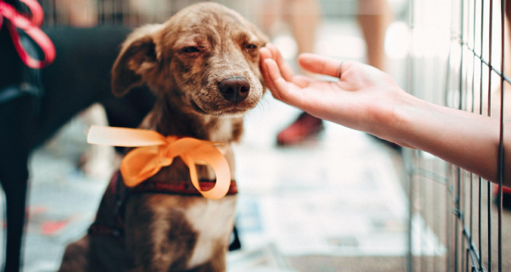

La práctica de adoptar y cuidar a una mascota de manera consciente y comprometida, asegurándose de que el animal reciba atención médica adecuada, nutrición adecuada, ejercicio, entrenamiento y un ambiente seguro y amoroso para toda su vida.
Que es la adopcion de mascotas responsable? üêæ
Implica tomar decisiones informadas al elegir qué mascota adoptar, considerando factores como el estilo de vida, el espacio disponible y la capacidad de atender a las necesidades del animal. Además, implica esterilizar o castrar a la mascota para evitar la sobrepoblación y el abandono de animales.
Existe una gran cantidad de personas que se sienten solas y encuentran en estos perritos u otros animales al compañero que necesitan. Adoptar una mascota implica aprender a ser un buen dueño.

En Argentina, las adopciones de animales de compañía, como perros y gatos, son las más comunes en las organizaciones de rescate y refugios para animales, donde los animales son cuidados y rehabilitados antes de ser adoptados.
Preguntas Frecuentes
Que vacunas necesita un gato?
Los gatos necesitan varias vacunas para prevenir enfermedades que pueden ser graves o incluso mortales.
- Vacuna contra el herpesvirus felino (FHV-1)
- Vacuna contra el virus de la panleucopenia felina (FPV)
- Vacuna contra el calicivirus felino (FCV)
- Vacuna contra la leucemia felina (FeLV)
- Vacuna contra la rabia
El esquema de vacunación y la frecuencia de las vacunas pueden variar dependiendo de la edad del gato, el historial de vacunación previo, el estilo de vida del gato y otros factores. Es importante consultar con un veterinario para determinar el mejor plan de vacunación para su gato en particular.
Que vacunas necesita un perro?
Algunas de las vacunas más comunes que se recomiendan para los perros incluyen:
- Vacuna contra el moquillo canino (CDV)
- Vacuna contra la parvovirus canino (CPV)
- Vacuna contra la hepatitis canina (CAV)
- Vacuna contra la tos de las perreras (Bordetella bronchiseptica)
- Vacuna contra la rabia
Además de estas vacunas básicas, hay otras vacunas que pueden ser recomendadas para perros dependiendo del estilo de vida del perro, su edad, ubicación geográfica y otros factores, como por ejemplo la vacuna contra la Leptospirosis.

Donde se pueda adoptar mascotas en buenos aires, argentina?
hay varios lugares donde se puede adoptar mascotas en Buenos Aires, Argentina. Aquí hay algunas opciones:
- Sociedad Argentina Protectora de Animales (SAPA)
- Fundacion Bicho Feliz
- Refugio: El Campito
- Proyecto Cuatro Patas
- @MascotasEnAdopcionArgentina
Hay muchas más organizaciones que ofrecen servicios de adopción de mascotas en Buenos Aires y sus alrededores, y se pueden encontrar en línea buscando en sitios web de rescate de animales o en redes sociales como Facebook e Instagram.